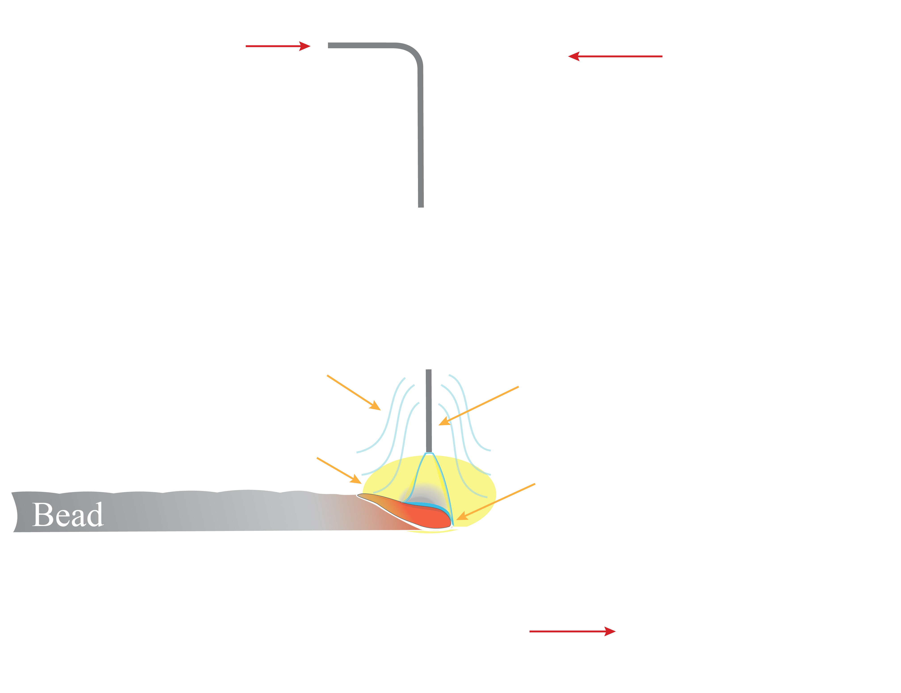

Doctoral Thesis
My doctoral research explores how two-color thermography can be used as a scalable sensing framework for metal additive manufacturing. Rather than relying on extensive instrumentation, this approach uses a single commercial camera to extract multiple process outputs of interest—such as melt pool temperature, cooling rate, thermal gradients, and geometric features—creating a path toward multi-output feedback control with minimal sensing inputs.
The broader goal is to reduce sensing complexity while still enabling meaningful process awareness and control in wire arc additive manufacturing (WAAM). By turning one imaging system into a rich source of thermal information, this work supports defect mitigation, improved mechanical performance, and more practical closed-loop implementation in industrial environments.
0. Preface
This thesis is motivated by the need for practical, in-situ monitoring methods in welding-based metal additive manufacturing. It frames thermal imaging not just as a measurement tool, but as a scalable input for process understanding and future closed-loop control.


1. Introduction to Wire Arc Additive Manufacturing
This chapter introduces WAAM as a large-scale metal additive manufacturing process and establishes the importance of thermal history in governing melt pool behavior, solidification, microstructure, and resulting mechanical properties.
2. Optimizing Camera Parameters for Two-Color Thermography
This chapter develops the experimental framework needed for reliable two-color measurements with a commercial color camera, including calibration, exposure selection, and strategies to reduce arc and plasma interference during welding.

3. Two-Color Thermography of L-59 Low-Carbon Steel
This work demonstrates that two-color thermography can recover meaningful thermal metrics during gas metal arc welding of low-carbon steel. These measurements are then linked to cooling behavior and hardness, showing how one sensing input can produce multiple outputs relevant to process monitoring.
4. Two-Color Thermography of Cold-Metal Transfer Alloy 718
This chapter extends the framework to multi-layer Alloy 718 WAAM builds, where interlayer dwell time, thermal accumulation, cooling rate, and melt pool evolution are studied together. The goal is to better understand how thermography can support process control in more complex deposition conditions.

5. Multi-Spectral Thermography for Aluminum Alloy Welding
The final chapter explores broader multi-spectral imaging approaches for aluminum alloy welding, where optical behavior can be more challenging. This work investigates how richer spectral measurements may further expand the number of process outputs available from a compact sensing setup.